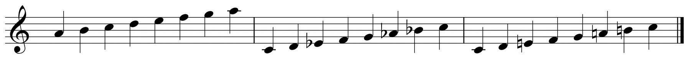
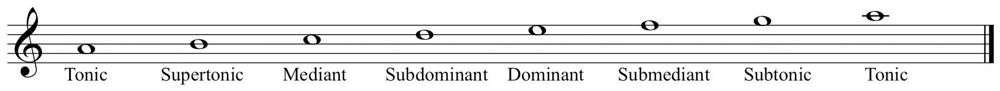
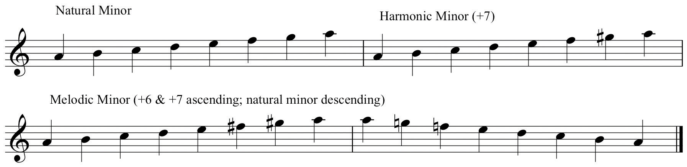
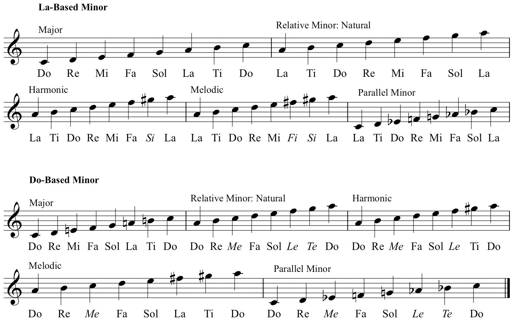
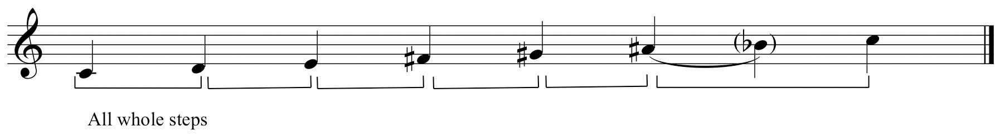
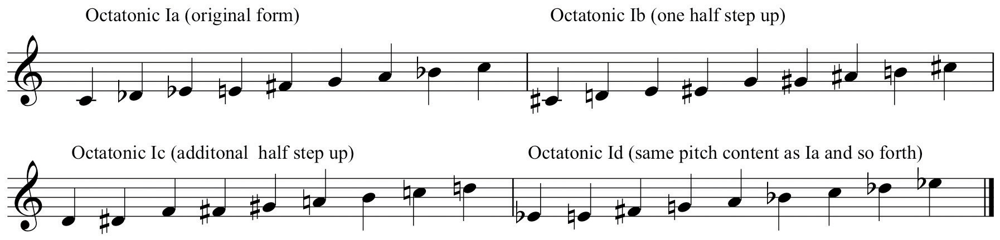
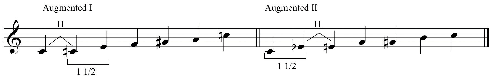

In this chapter, we shall examine the small incremental distances called Tones and Semi-tones. More commonly labeled whole stepsAdjacent scale steps that have an intervening half step. and half stepsAdjacent tones, the smallest distance between tones in the current system of tuning., these foundation scale-steps serve as the building materials from which we construct sequential orderings of pitches called scalesA sequential collection of five or more pitches..
The construction of various scales shall also be examined, especially the Major Scale and the Minor Scale. Additionally, other important scale patterns will be shown.
In examining the notation of pitch, we observe that notes climbed or “scaled” the lines and spaces of staves from low to high. Ordered sequential collections of these pitches are called scales (Italian: scala-“ladder”).
Scales are comprised of five or more pitches arranged in sequential patterns of whole steps and half steps spanning an octave species. We label scales as to the number of differing elements they contain:
Four-note sequences are called tetrachords (Greek: “four tones”). In this context, they are regarded as constituent components of larger scale patterns.
Since scales are orderings of whole steps and half steps, these serve as the foundation “building-blocks” for scale construction. As we learn to construct and identify scales, we do so by recognizing their content in terms of tones (whole steps) and semi-tones (half steps).Although tone and semi-tone are proper names, whole step and half step are commonly used terms. In some instances you may encounter the terms whole tone and half tone also. For now, avoid calling whole steps and half steps by any other name, for example, “major-seconds” or “minor–seconds.” Proper interval identification for whole steps and half steps shall be addressed in Chapter 5 "Intervals".
Throughout the history of music, various systems of referential tuning have evolved, been adopted, been modified, and been discarded in favor of other systems. It is not within the purview of this discussion to examine these various and sundry systems of tuning.An exceptionally clear and concise discussion of the history and theory of tuning systems may be found in Chapters 1 and 2 of Chromaticism: Theory and Practice, Howard Boatwright, Walnut Grove Press, 1994.
For our purposes, we shall limit the discussion to the standardized tuning system known as equal temperamentThe current system of tuning whereby pitches have been adjusted to allow division of the octave into twelve equal portions.. Music in the transitional period between the Renaissance and Baroque employed different tuning systems that limited compositional resources. A “compromise” tuning system was proposed and gradually adopted, whereby pitches were slightly altered enabling the division of the octave into twelve equal portions or semi-tones (half steps). This “evenly-tuned,” or “equal-tempered” system allowed composers to employ the full resources of the chromatic collection.This will come into focus in Chapter 4 "Key Sense, Key Signatures, and The Cycle of Fifths" and Chapter 5 "Intervals".
Therefore, the source collection for Western music is the Chromatic ScaleThe source set or collection for pitch materials as defined within equal temperament..The Chromatic Scale, so called because it contains all the pitch “colors,” is also known as the Duodecuple scale (Latin: duo-deca, “two and ten”). It is also labeled the Non-Selective Scale, so-called because, all pitches being of equal quality, no one pitch asserts itself over the others.
Figure 3.1 The Chromatic Scale
The Chromatic Scale is comprised entirely of half steps. When constructing this, it is customary to use sharps when ascending and to use enharmonically equivalent flats when descending.
Music of the mid-17th Century through end of the 19th Century saw the formulation of a more or less unified system of composition and its supportive theory. A lingua franca of music was established, essentially a common language shared by all musicians. Music of the period (roughly!) from Corelli through Brahms is called the Common Practice PeriodMusic from roughly the 17th- through the 19th Centuries. Also may be referred to as Tonal Music., or the Common Practice style.
One of the fundamental attributes of this Common Practice style was the use of two scale types. These two types, Major and Minor were “distilled” from the multiple scale types employed in early music. Major and Minor scales became the predominant resource for Common Practice music. These scale types shall become essential tools for many of the acquired tasks and skill-sets in the study of music. Understanding and recognizing these constructs is a fundamental and necessary attribute of the music student.
The student should understand:
Any initial discussion of scales inevitably centers around these two seven-tone scales employed in the composition of Common Practice music.
The most common scale pattern used is the Major ScaleA heptatonic (“seven-tone”) scale consisting of the following arrangement: W-W-H-W-W-W-H.. It is an arrangement of whole and half steps as follows:
| ˆ | ˆ | ˆ | ˆ | ˆ | ˆ | ˆ | ˆ | |||||||
| 1 | 2 | 3 | 4 | 5 | 6 | 7 | 8 | |||||||
| W | W | H | W | W | W | H |
Note that half steps occur between scale degrees 3–4 and 7–8. This is shown in pitches and the keyboard in Figure 3.2 "Major Scale, Keyboard and Pitches".
Figure 3.2 Major Scale, Keyboard and Pitches

This arrangement of whole steps and half steps is maintained for any major scale on any given starting pitch. Accidentals are used to modify pitches in order to retain this same arrangement of whole and half steps. Compare the samples below to the keyboard diagram. Observe the placement of whole and half steps on the keyboard that maintain the proper ordering.
Figure 3.3 Other Examples of Major Scales

Observe that in each new octave species, some chromatic alteration is required in order to retain the same arrangement of scale steps.
An alternate view of major scale construction is an examination of its constituent tetrachords (from the Greek: “four tones”). Observe that the arrangement of whole and half steps in the first tetrachord are identical to that of the second tetrachord. Both tetrachords are W-W-H separated by a whole step.
So, two mnemonics are suitable for remembering Major scale construction:
The keyboard diagram is another essential tool for familiarization and recognition of major scales. The visual reinforcement of whole step and half step placement will hasten the learning process.
The individual scale steps have specific labels. These terms have come into general use, having their origins in early 18th-century theoryFrench composer and theorist Jean Phillipe Rameau employs versions of these terms in his seminal work Traité de l’harmonie (1728). Our current usage of these terms is adapted from this work. Figure 3.4 "Scale-step Labels" shows the major scale and its accompanying scale step labels.
Figure 3.4 Scale-step Labels

Figure 3.5 Scale-steps in Order of Importance

The other heptatonic scale used in Common Practice music is called the Minor ScaleA heptatonic scale having three distinct forms, Natural, Harmonic, and Melodic Minor.. It is arranged as follows:
| ˆ | ˆ | ˆ | ˆ | ˆ | ˆ | ˆ | ˆ | |||||||
| 1 | 2 | 3 | 4 | 5 | 6 | 7 | 8 | |||||||
| W | H | W | W | H | W | W |
Figure 3.6 The Minor Scale

For this example, the pitches are identical to the Major scale example above, re-arranged from scale degree six. Figure 3.7 "Minor Scales on a; on c; Major Scale on C" shows the same Minor scale pattern, but constructed from the same starting pitch. Both are then compared to the Major scale.
Figure 3.7 Minor Scales on a; on c; Major Scale on C
As with major scales, minor scales use accidentals to retain the same “shape” when starting on differing pitches.
Figure 3.8 Other Examples of Minor Scales

The previous examples demonstrate particular relationships between Major and Minor scales:
In order to discover the Relative Major/MinorThe relationship between Major and Minor scales wherein they share the same pitch content but have a different order. relationship, follow this procedure:
To find the Relative Minor scale of any Major scale:
To find the Relative Major scale from any Minor scale:
We do not recommend the “three up or three down” method that is sometimes employed. This leads to confusion on the part of the student. Inevitably, the student will go down the wrong specific pitch distance, or will confuse which relationship is which direction.
In order to discover the Parallel Major/MinorThe relationship between Major and Minor scales wherein they share the same starting pitch but different pitch content. relationship, simply construct major or minor from the same starting pitch.
Relative and Parallel Major/Minor will extend to our discussion of keys in Chapter 4 "Key Sense, Key Signatures, and The Cycle of Fifths".When labeling scales it is customary to use upper case letter names for major and lower case letter names for minor. When hand-drawn, a dash is placed above the letter c only. This should not be used for other lower case letters. These relations commute from each form to the other: one speaks of Major and its relative Minor, or Minor and its relative Major. The same is true for the parallel relationship.
Figure 3.9 Relative and Parallel Scales: Major to Minor and Minor to Major

Just as the Major scale has labels for its constituent scale-steps, these labels are also used for Minor scales. There is one notable exception: since the distance between scale degree seven and the octave is a whole step, it does not possess the same sensation of required resolution as its major counterpart (the Leading Tone). Therefore it is labeled Subtonic.
Figure 3.10 Minor Scale-Step Labels
Earlier, the Leading Tone was described as the most powerful melodic step that we respond to in terms of demanding resolution. This half step between scale degrees seven and eight is not present in the naturally occurring Minor scale. Beginning with its antecedents in early music, the minor sonority was routinely altered to address this perceived flaw.
Composers chromatically raised the seventh scale degree in minor as a matter of routine in order to provide a more powerful melodic resolution. Additionally, this alteration affected the accompanying harmonies, engendering a more powerful harmonic resolution as well.
This led to an additional, altered form of the minor scale. The original diatonic form of the minor scale is called Natural (or Pure) MinorThe naturally occurring diatonic “parent” version of the Minor scale.. Because of its implied harmonic consequence, the altered version (raised 7, or +7) is called the Harmonic Form of the Minor scale, or simply Harmonic MinorThe most commonly used and expected form of the Minor scale. It is altered from Natural Minor by raising the seventh scale degree to artificially create a Leading Tone..
Figure 3.11 Natural and Harmonic Minor

The component scale steps for Harmonic minor are:
| ˆ | ˆ | ˆ | ˆ | ˆ | ˆ | ˆ | ˆ | |||||||
| 1 | 2 | 3 | 4 | 5 | 6 | 7 | 8 | |||||||
| W | H | W | W | H | (1 + 1/2) | H |
Observe several properties:
Figure 3.12 Other Examples of Harmonic Minor Scales

This perceived melodic flaw in Harmonic minor, the “step and a half” between scale degrees 6 and 7, was subject to routine alteration as well. In order to eliminate this awkward gap, composers routinely raised the sixth scale degree as well as the seventh. Since this was done to correct the perceived melodic flaw, a third form of the minor scale came to be recognized, called the Melodic Form of the Minor scale, or simply Melodic MinorThe second altered version of the Minor scale. It is altered by raising both the sixth and seventh scale degrees..
Figure 3.13 Natural, Harmonic, and Melodic Minor Scales
The component scale steps for Melodic minor are:
| ˆ | ˆ | ˆ | ˆ | ˆ | ˆ | ˆ | ˆ | |||||||
| 1 | 2 | 3 | 4 | 5 | 6 | 7 | 8 | |||||||
| W | H | W | W | W | W | H |
Observe several properties:
Figure 3.14 Other Examples of Melodic Minor Scales

Before continuing several very important points must be made:
The three forms have distinct properties:
Composers seemed to require the motion from the Leading Tone to the Tonic. Just as much, they seemed to favor the naturally occurring sixth scale degree, the Submediant, “falling” to the Dominant. In the study of music theory, expect to see, expect to hear, and expect to use the Harmonic form of Minor. The unique properties of the other forms are used sparingly and are subject to conditions for their use.
In summary, major and minor scales form the fundamental source sets, and therefore the basis of the compositional language in Common Practice music. All the great music of the recognized master composers employed these same constructs as the basic elements of their compositional language.
The student should understand:
In your Scale Thesaurus:
In your Scale Thesaurus:
In your Scale Thesaurus:
In Chapter 2 "The Elements of Pitch:Sound, Symbol, and Tone", solfége was explained in its historical and pedagogical context, and as one way of labeling pitch and as a mnemonic device. The principal use of solfége as a pedagogical tool is the aural reinforcement of written music.
Many differing solfége systems have evolved, each for a specific reason, for a specific context, or to offer an alternate method to a previous system. They can be classified into two broad categories:
Several subcategories have evolved from Moveable-Do and involve the treatment of the Minor mode. The two most prevalent are called La-based MinorA sub-category of Moveable Do. Major is sung beginning on Do, Minor begins on La. and Do-based MinorA sub-category of Moveable Do. Both Major and Minor begin on Do..
La-based Minor: The Tonic in Major begins on Do. The Tonic in Minor begins on La.
General advantages:
Minor syllables in La-based Minor:
| ˆ | ˆ | ˆ | ˆ | ˆ | ˆ | ˆ | ˆ | ||
| 1 | 2 | 3 | 4 | 5 | 6 | 7 | 8 | ||
| Natural Minor: | La | Ti | Do | Re | Mi | Fa | Ti | Do | |
| Harmonic Minor: | La | Ti | Do | Re | Mi | Fa | Si | La | (Raised 7: Si) |
| Melodic Minor: | La | Ti | Do | Re | Mi | Fa | Si | La | (Raised 6 and 7: Fi-Si) |
Do-based Minor: The Tonic in both Major and Minor begin on Do.
General advantages:
Minor syllables in Do-based Minor :
| ˆ | ˆ | ˆ | ˆ | ˆ | ˆ | ˆ | ˆ | ||
| 1 | 2 | 3 | 4 | 5 | 6 | 7 | 8 | ||
| Natural Minor: | Do | Re | Mi | Fa | Sol | Le | Te | Do | (Me, Le, Te pronounced “may,” “lay,” “tay”) |
| Harmonic Minor: | Do | Re | Mi | Fa | Sol | Le | Ti | Do | (Raised 7: Ti) |
| Melodic Minor: | Do | Re | Mi | Fa | Sol | La | Ti | Do | (Raised 6 and 7: La-Ti) |
Each system has its advocates and its detractors. Each has perceived advantages and disadvantages. Having used all known systems, the author has had the greatest student success employing the Do-based model. After an initial familiarization period (because of the use of altered syllables), the vast majority of typical undergraduate music theory students respond to this system.
Figure 3.15 La-based and Do-based compared
Regardless of which solmization system is used, the purpose remains the same. After a period of familiarization and rote drill, the student will begin to recognize patterns aurally. This is to say that recognition will not merely be aural recognition when heard, but rather, specific patterns will be “engraved” in the student’s mind. These patterns will be solfége-triggered responses. This audio-acoustic trigger response will increase and become more fluent with practice.
The student should understand:
Pre-Tonal (pre-Common Practice) music is generally considered to be music prior to 1587 or16001600 is a convenient benchmark. 1587 is sometimes used as a more specific date. This coincides with the establishment of the Florentine Camerata, (or Camerata di Bardi after its patron), a colloquium of Northern Italian Humanists, Poets, Musicians, and aesthetes. In attempting to “rediscover” and recreate ancient Greek dramatic forms, they developed a new style of music, the “Second Practice,” or “New Style.” This was the origin of Opera.. This period is often referred to as the Modal Era (as opposed to the Tonal Era that is the Common Practice period).
The source materials for Tonal practice consist of the Major/Minor duality. Music of this period essentially relied upon Major and Minor scales and their extrapolated constructs as the formative resources for composition.
In the Modal Era, the source materials were a collection of scalar constructs called ModesHeptatonic scales used in early music. Also used in post-Tonal music.. Originating as tetrachords in early Greek theory, in early Western music they consisted of a collection of interlocking hexachords, each with specific attributes. In time, as compositional resources evolved, supported by accompanying theoretical principles, Modes became a series of heptatonic scales, each with very specific attributes.
Although these were the theoretical basis for early music, modes languished during the Tonal Era. Composers in the 20th-Century, looking for alternative resources to Major and Minor scales, “re-discovered” modes. Modal “flavors” are found in abundance throughout examples of music since 1900.
Modes have become an integral resource in the Jazz style as well. Since the mid-to-late 1950’s, modes are considered to be the initial, or primary source scales for Jazz improvisation, especially in the pedagogical practice called chord/scale equivalency.Most Jazz scholars identify the seminal recordings of Miles Davis in the late 1950’s as heralding the advent of modal use in Jazz. There is evidence that trumpet player Don Cherry may have used modal resources earlier in the decade.
The Ecclesiastical Modes (or “Church” Modes) were seven-tone scales built upon D, E, F, and G. Each was ordered as an octave species from the modal finalThe modal equivalent of Tonic or keynote. (modal “tonic”). Each also had a re-ordered version wherein the top tetrachord of each was placed below the modal final (Latin: finalis). The original ordering was called the AuthenticThe original ordering of a mode as an octave species from the final. form of the mode, the transposed version was called the PlagalA re-ordering of the mode wherein the top tetrachord is placed below the final. form.
These alternate Plagal orderings were not new modes: each pair, Authentic and Plagal, had the same final. A particular form was so labeled based upon the range of the modal melody as well as upon the perceived modal dominant within each form.
Originally, modes had specific names. These names reflect regional or place names from the Hellenistic world but were really stylistic indicators. In early church music modes were numbered sequentially. Eventually, the early names were re-used reflecting their early origins. We label modes using these names.
Figure 3.16 Ecclesiatical Modes

In and of themselves, the theoretical modes were considered to have certain flaws in regard to their use in practical composition. These perceived flaws were treated by the use of musia ficta: composers routinely altered pitches to achieve the desired result. For example, the “softening” of the fourth scale degree in Lydian, or adding a Leading Tone to Dorian and Mixolydian.Because of its unique character, Phrygian was resistant to any alteration.
Figure 3.17 Modes and music ficta

In practical composition, the altered version of the mode became the version used. The resulting mixtures of mode and alteration in time yielded new scales, recognized as such by established practice. This was codified in the Greater Modal System.
Figure 3.18 The Greater Modal System (Abbreviated)

Note that Ionian is the Major scale and Aeolian is the Natural Minor scale. The other earlier modes (again by established practice) gradually polarized toward one or the other of these two forms. Due to the perceived flaws of each mode, they eroded under the weight of their own inefficiency and distilled into either the “Major” mode, or the “Minor” mode. The Locrian mode, while recognized as a theoretical mode was not used in practical composition due to its unstable final resolution.Locrian was not included in the system of modes until 1482 where it was described in the treatise de Musica of the Spanish composer and theoretician Bartolomé Ramos de Pareja.
This sense of polarization toward either Major or Minor becomes one useful technique for learning modes and familiarization with their characteristics. The Associative MethodRecognition of modes by association with either the Major or the Minor scale and observing the variances from these. classifies modes as having the same basic characteristics as either Major or Minor and then recognizes the variances.
| Major Sounding Modes | Minor Sounding Modes |
|---|---|
| Ionian: Major | Aeolian: Natural Minor |
| Lydian: Major, raised 4 | Dorian: Minor, raised 6 |
| Mixolydian: Major, lowered 7 | Phrygian: Minor, lowered 2 |
|
Locrian: Minor, lowered 2 & 5 (or Locrian: Phrygian, lowered 5) |
Figure 3.19 The Associative Method for Modes

This method is extremely useful in many instances, especially for recognition purposes and as a tool for learning to hear and sing modes.Some advocate a similar system wherein the student is compelled to memorize modes as variances from the major scale. We reject this as being unwieldy and narrow. As such, it cannot be recommended. Modes are labeled by the letter name they begin upon followed by the mode name.
Figure 3.20 Sample Modes and Labels
A second method is more complete and serves well for the identification of modes, as well as the construction and transposition of modes to other pitches. Observe Figure 3.21 "The Revolving Scale Method for Modes". This diagram of the abbreviated Greater Modal System is projected as a revolving major scale. In other words, it appears to be a C major scale constructed upon successively higher scale degrees. In this Revolving Scale MethodRecognition of modes by their consistent order in the context of the Revolving Major Scale., each successive reordering of the scale corresponds to one of the modes.
Figure 3.21 The Revolving Scale Method for Modes
This modal ordering remains constant regardless of the major scale used. Therefore, it can be used as an “algorithm,” a known value for comparative problem solving, and used as a tool for identifying, constructing, and transposing modes. In Chapter 4 "Key Sense, Key Signatures, and The Cycle of Fifths" modes will be revisited and the Revolving Scale model will be used in conjunction with other tools to perform these tasks.
Figure 3.22 Revolving Model from F

The student should:
In your Scale Thesaurus:
In your Scale Thesaurus, using the Associative Method, construct the following modes:
The fin de siécle period, the crossover period between the 19th- and 20th Centuries, witnessed monumental changes as to how music was composed. By this point in the evolution of Western music, Tonal music had not exhausted itself, but had developed as fully as it could in terms of compositional resources.
Composers began to explore alternate scalar resources to Major and Minor. Modes were employed as was the Pentatonic scaleProperly, a scale that divides the octave into five equal portions. In equal temperament, this is most closely approximated aurally by playing the black keys at the piano.. The absence of a Leading Tone in the Pentatonic scale, as well as its folk music associations, made it an attractive, naturalistic alternative to Major and Minor scales.
In Jazz pedagogy, two distinct forms of the Pentatonic scale are recognized, called Major Pentatonic and Minor Pentatonic. They are so-called due to their inherently Major or Minor sounding qualities.
Figure 3.23 Pentatonic Scale Rotation

Composers in this historically transitional period and throughout the 20th Century seemed fascinated by aspects of symmetry in musical constructs.The symmetrical nature of the Pentatonic scale is not overtly obvious. The symmetry is there, but its explanation must be held in abeyance contingent upon other acquired information. In scale construction, this took the form of division of the octave into symmetrical portions. This is apparent in the types of scale patterns that came into common use in the late 19th Century and continued throughout the 20th Century.
The Whole Tone ScaleA hexatonic scale comprised of only whole steps that divides the octave symmetrically into six equal portions of two half steps each., properly considered to be a Hexatonic (six-tone) scale, displays numerous symmetrical traits.There are numerous “axes of symmetry” in whole tone scales. Only those pertinent to this discussion are included here. It is comprised of all whole steps, dividing the octave symmetrically into six portions of two half steps each.
Figure 3.24 The Whole Tone Scale
Since this symmetrical division accounts for six of the possible twelve pitch-classes from the chromatic collection, the other six pitch-classes of the chromatic collection form one other whole tone scale.
Figure 3.25 Whole Tone I (WT I) and Whole Tone II (WT II)

Each whole tone scale replicates itself when re-ordered in a revolving manner. Pitch-classes remain identical, the “spacing” remains identical, although enharmonic spellings are freely used.
Figure 3.26 Revolving Whole Tone Scales

Because of these properties there are only two whole tone scales aurally. All other versions are re-orderings of either WT I or WT II, but will assume individual identities according to their use is specific contexts.
Another commonly used symmetrical scale is called the Octatonic ScaleAn eight-tone scale. The most common form is the symmetrical division of the octave into eight portions of either alternating half steps and whole steps, or alternating whole steps and half steps.Theoretically, any scale with eight constituent members is an octatonic scale. The versions described here are those most commonly used. In Jazz pedagogy, these versions are called “diminished scales” or “symmetrical diminished scales” because of the structures formed by alternate scale degrees. The two related forms of the Octatonic Scale divide the octave into eight portions consisting of either alternating half steps and whole steps, or alternating whole and half steps.
Figure 3.27 Octatonic I (Oct I) and Octatonic II (Oct II)

Oct I and Oct II have only three forms each. Figure 3.28 "Octatonic Rotations" shows Oct I with additional re-orderings on successively higher scale degrees. Observe that, after the original form and two additional transpositions have been listed, the fourth ordering is equivalent to the first, the fifth is equivalent to the second, and so forth. The same holds true for Oct II.
Figure 3.28 Octatonic Rotations
Another commonly used hexatonic scale pattern is sometimes called the “Augmented” scaleA hexatonic scale that symmetrically divides the octave by alternating half step and step-and-a-half, or the reverse..This hexachord, along with the Whole Tone, Octatonic, and Chromatic scales are labeled “Modes of Limited Transposition” in 20th-century composer Olivier Messiaen’s Techniques de mon langage musical. This label refers to the chords built upon alternate scale degrees. This is also a symmetrical construct, evenly dividing the octave by the pattern, “half step and a step and a half.” It’s related counterpart divides the octave by the reverse pattern, “step and a half and halfstep.”
Figure 3.29 “Augmented” Scale
Two other scales having great currency in 20th Century music are identical in pitch content and identical in their potential origin, but vastly different in context and usage. Figure 3.30 "“Nearly” Whole Tone and Lydian-Mixolydian" compares the Whole Tone scale to the “Nearly” Whole ToneA six-tone scale that is an altered whole tone scale. One pitch is altered to create a single half step in the collection. In this chapter it has been listed half step first. In other sources, there are other orderings. Hexachord and the Lydian-DominantA heptatonic scale wherein the first tetrachord resembles Lydian mode (raised 4) and the second tetrachord resembles Mixolydian mode (lowered 7). scale.Lydian-Dominant is only one label for this scale and is used here as a convenience only. Other names are Lydian-Dominant (common to Jazz pedagogy) or (the proper name) the Overtone Scale. These additional names will not acquire meaning until the student has acquired additional information. Observe that, despite differing orderings, the pitch-class content is identical for the “Nearly” Whole Tone and Lydian-Dominant scales.
Figure 3.30 “Nearly” Whole Tone and Lydian-Mixolydian

The Nearly Whole Tone hexachord is just that: all whole steps except for an initial half step. The Lydian-Mixolydian scale is so-named because the first tetrachord resembles the first tetrachord of the Lydian mode, and the second tetrachord resembles the second tetrachord of the Mixolydian mode.
Both scales have their potential postulated origin in the naturally occurring acoustical phenomenon called the Overtone (or Harmonic) Series, discussed in Chapter 6 "Chords".The Nearly Whole Tone hexachord is the source set that forms the basis of Russian composer Alexander Scriabin’s Mystic Chord, an important component of his personalized compositional syntax.
These are but a few of the many scales that have been recognized and used in contemporaneous theory and composition. While the primary focus of the student should be upon Major and Minor scales at this juncture, at least a passing familiarity with other scalar constructs is desirable.
One cannot begin to understand and perform early music without an understanding of modes. Much music since 1900 has been composed using modes or, at least, modal “flavors.” One cannot improvise credibly in the Jazz style without understanding and employing modes.
These same remarks may be made concerning the other scales discussed. One cannot begin to understand and perform modern music without an understanding of these various scale patterns. In time, with the proper investment of effort, these scales (and others) will open new worlds in a deepening musical experience.
The student should understand:
In your Scale Thesaurus:
In your Scale Thesaurus:
This chapter provides an overview and discussion of the scalar resources used by composers. The student should focus upon Major and Minor scales at this point. Modes and other scales will become valuable assets in time. There are numerous additional scale patterns that are recognized in various pedagogical practices. The examples given here are those that are the most common.
In the next chapters, Major and Minor scales will become affiliated with specific tonal “regions” or keys. They will also be added to our arsenal of useful tools.